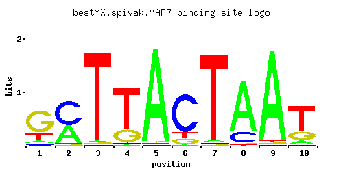

YAP7
YOL028C
Putative basic leucine zipper (bZIP) transcription factor
Best-performing DNA-binding model.

View and copy the recommended matrices ↘
A | 0.064 0.403 0.017 0.008 0.972 0.014 0.021 0.802 0.964 0.088 C | 0.062 0.564 0.010 0.020 0.008 0.767 0.016 0.180 0.008 0.021 G | 0.661 0.017 0.012 0.229 0.014 0.105 0.009 0.011 0.012 0.229 T | 0.213 0.017 0.962 0.743 0.008 0.113 0.954 0.007 0.017 0.661
A | 6 40 1 0 97 1 2 80 96 8 C | 6 56 1 2 0 76 1 18 0 2 G | 66 1 1 22 1 10 0 1 1 22 T | 21 1 96 74 0 11 95 0 1 66
A | -1.61 0.23 -2.94 -3.69 1.11 -3.13 -2.72 0.92 1.10 -1.29 C | -1.07 1.14 -2.89 -2.20 -3.11 1.45 -2.42 0.00 -3.11 -2.15 G | 1.30 -2.36 -2.71 0.24 -2.55 -0.54 -3.00 -2.80 -2.71 0.24 T | -0.41 -2.94 1.10 0.84 -3.69 -1.04 1.09 -3.82 -2.94 0.73
Alternative candidate matrices 11
Historical matrix candidates from the original ScerTF database. Expand a source to inspect its original logo, scores, and matrix values.
YAP7_AFoat et. al.P = 5.13e-60View matrix ↘
YAP7_BFoat et. al.P = 2.62e-64View matrix ↘
YAP7_CFoat et. al.P = 0.4849View matrix ↘
YAP7_AFordyce et. al.P = 0.03338View matrix ↘
YAP7_BFordyce et. al.P = 0.0002346View matrix ↘
YAP7_CFordyce et. al.P = 0.03555View matrix ↘
YAP7Harbison et. al.P = 9.98e-64View matrix ↘
YAP7Macisaac et. alP = 8.08e-70View matrix ↘
YAP7_AMorozov et. al.P = 1.23e-58View matrix ↘
YAP7_BMorozov et. al.P = 4.46e-05View matrix ↘
YAP7Pachkov et alP = 6.38e-70View matrix ↘
Gene-level annotations and interactions.
Genes bound in ChIP-chip experiments 18 genes
YBR272C, YDR468C, YDR469W, YER172C, YER173W, YHL009C, YHR001W-A, YJL029C, YLR067C, YLR068W, YLR321C, YMR073C, YMR131C, YMR316C-B, YOL069W, YOL070C, YOL071W, YOR121C
Genes affected by TF deletion 227 genes
YCR012W, YCR040W, YDR432W, YGR282C, YIL148W, YKR012C, YMR046W-A, YOL047C, YOR225W, YFR032C-A, YGL009C, YHR174W, YLR056W, YNL211C, YBR031W, YCR013C, YDR034C-A, YDR063W, YER117W, YGR279C, YIL082W, YKR042W, YKR013W, YNL080C, YOR226C, YAL069W, YDL061C, YJL052W, YJL118W, YOR066W, YPL048W, YOR380W, YOR382W, YDR160W, YFR007W, YHR025W, YIL174W, YIL176C, YIR034C, YJR116W, YJR147W, YLL028W, YLR340W, YLR372W, YLR374C, YMR071C, YNL147W, YNL149C, YOR347C, YOR351C, YPL187W, YAR068W, YBR283C, YGL103W, YGR180C, YHR208W, YHR210C, YNL335W, YNL337W, YPL142C, YBR091C, YBR067C, YDR461W, YGR034W, YJR146W, YJR117W, YLR339C, YNL146W, YPR013C, YNL251C, YBL026W, YCL018W, YBR256C, YDL191W, YDR281C, YGL102C, YGR185C, YIL015W, YML026C, YML086C, YPL145C, YPL147W, YDR378C, YJR094W-A, YLR287C-A, YNL089C, YNL030W, YAL013W, YDL133C-A, YDL136W, YHR123W, YHR188C, YJL121C, YMR230W, YNL279W, YOR045W, YBR009C, YDR077W, YER154W, YGR285C, YHL021C, YIL153W, YNL027W, YNL057W, YOR234C, YAL012W, YBR196C, YKL081W, YOR390W, YER097W, YDR539W, YGR037C, YLR344W, YLR348C, YOL144W, YOL086C, YOR293W, YBL062W, YBL003C, YKL147C, YKL178C, YDR471W, YJL025W, YLL010C, YLR343W, YLR379W, YMR079W, YMR081C, YNL150W, YOL143C, YPL279C, YOR221C, YIL027C, YJL158C, YKL177W, YMR323W, YHR010W, YKR057W, YKR093W, YMR057C, YOL029C, YIL114C, YHR190W, YKL060C, YLR040C, YLR420W, YNL285W, YOR081C, YOR085W, YOR393W, YCL066W, YDR447C, YHR005C-A, YML126C, YOL028C, YOL030W, YOR210W, YHR189W, YKL120W, YLR041W, YLR043C, YFL026W, YHR072W-A, YLR388W, YMR147W, YOL126C, YDR322C-A, YER043C, YGL089C, YGR234W, YBR145W, YFR018C, YLL018C, YNL190W, YNL162W, YOL155C, YPL281C, YJR004C, YKL216W, YKL156W, YLR167W, YNR044W, YNL322C, YDR454C, YGL191W, YHL004W, YLR303W, YMR006C, YOR247W, YAL033W, YER019C-A, YGL031C, YHR136C, YHR141C, YJL141C, YPL076W, YBR053C, YCR028C-A, YIL169C, YLR300W, YLR302C, YNL070W, YNL074C, YNL045W, YOR248W, YDL121C, YGL032C, YGR118W, YJL136C, YLR421C, YMR215W, YFL037W, YJR135W-A, YLR332W, YLR334C, YMR158C-B, YOR369C, YOR375C, YDL184C, YKL164C, YLR180W, YLR390W-A, YOL127W, YBL018C, YER048W-A, YGR209C, YOR182C
Predicted TF–TF partners 1 genes
INO2